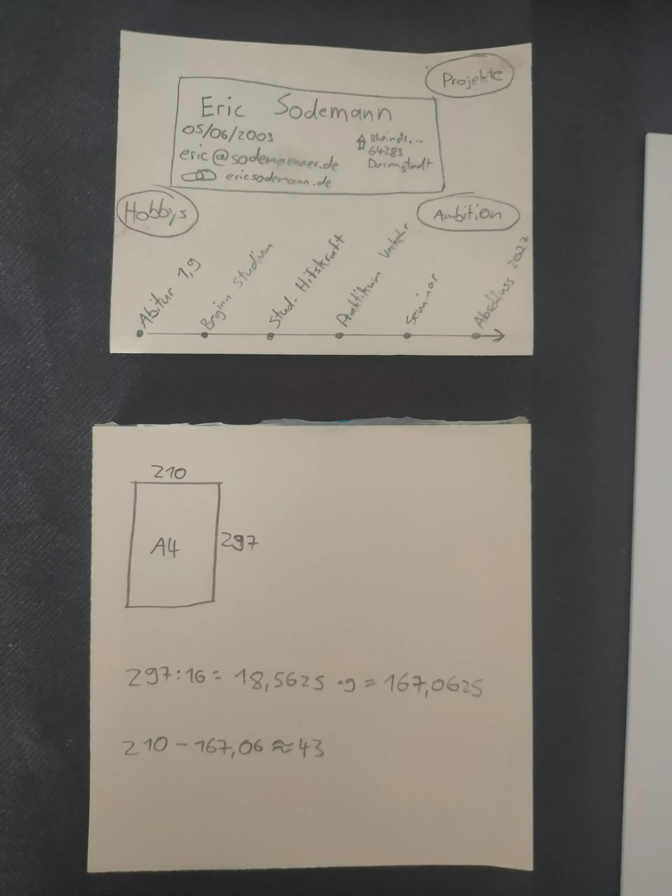
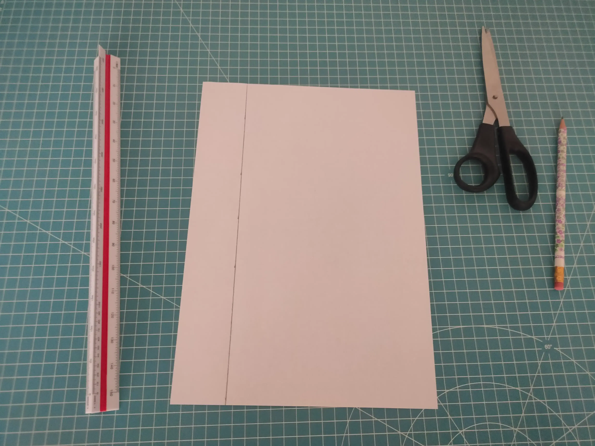
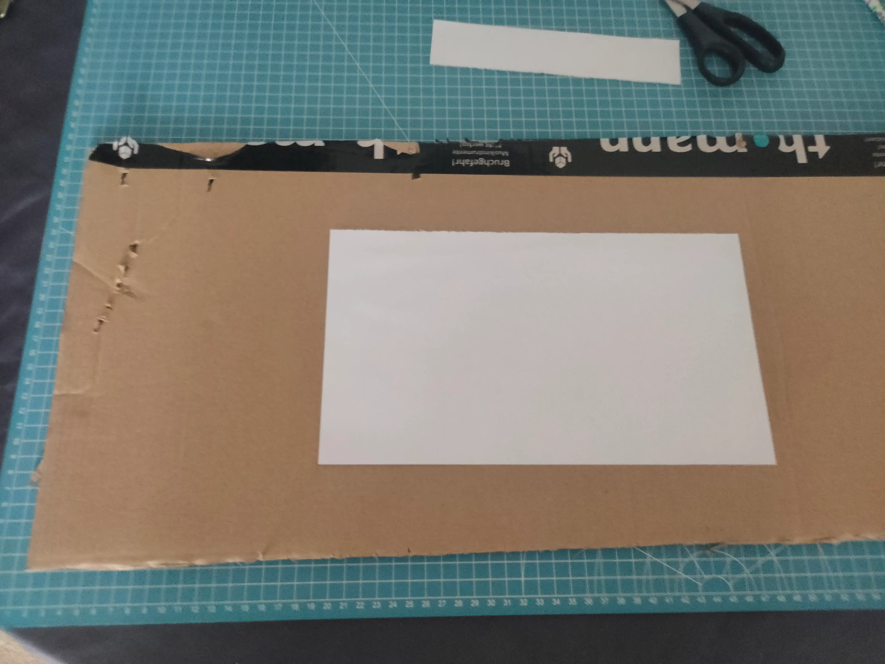
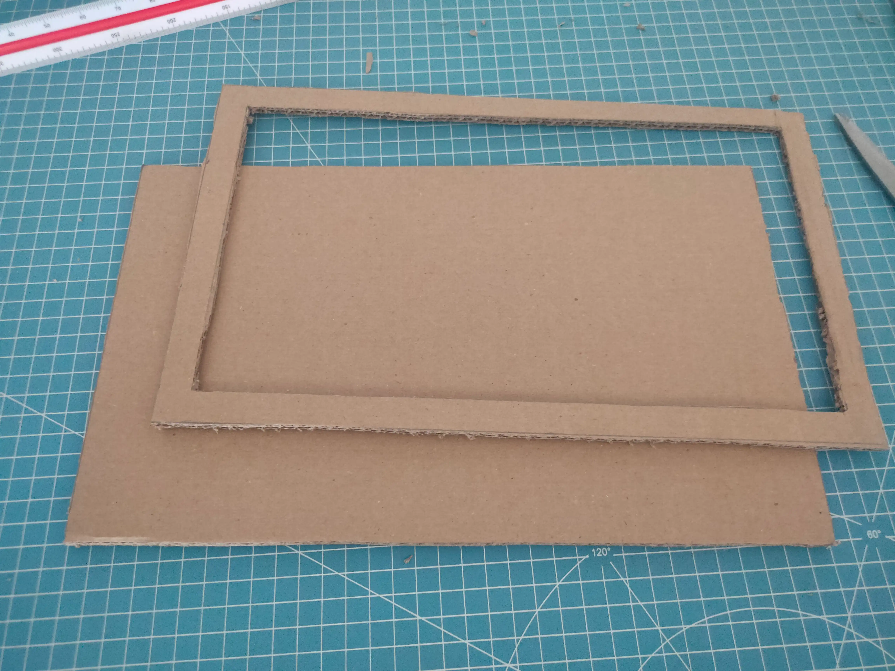
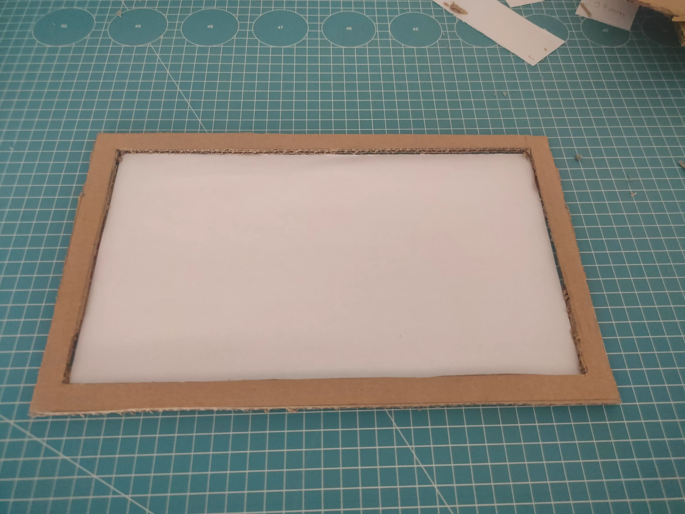
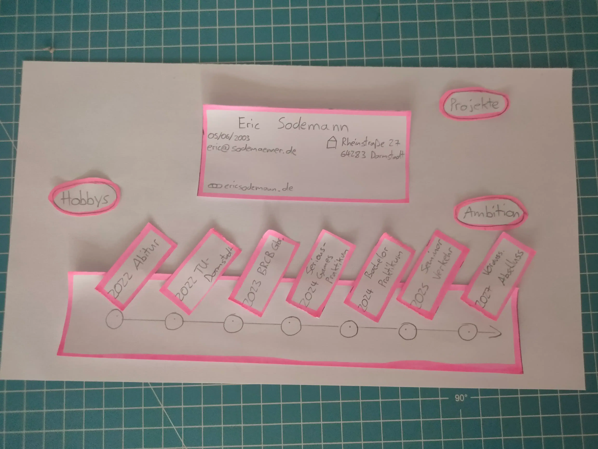
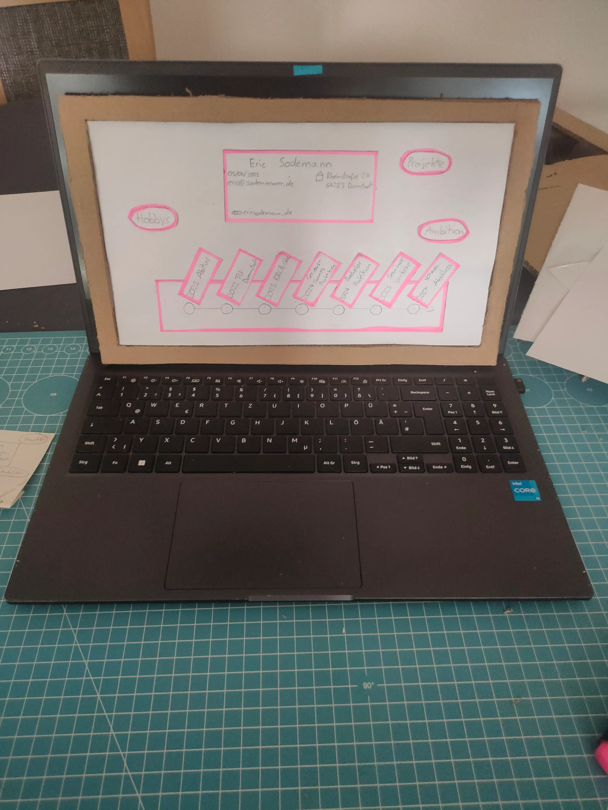

Der erste Entwurf der Landing-Page auf einem kleinen Zettel:

Um ein A4 Blatt auf 9:16 zu bringen, müssen 43mm abgeschnitten werden:

Dieses Blatt dient als Vorlage für den Rahmen des Prototyps:

Der Rahmen und die Rückplatte fertig ausgeschnitten:

Fest verkleben und testen, ob das Blatt hineinpasst:

Während der Kleber trocknet, wird das erste Layout vorbereitet:

Der Fertige Prototyp:

×